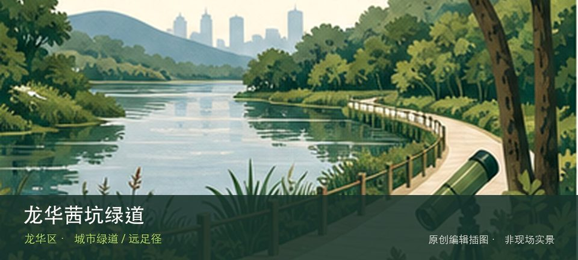

适合谁
适合有基础步行体力、愿意按天气调整路线的人；行动不便者应只选择平缓开放段。

SHENZHEN GUIDE · 238
观澜街道至茜坑老村 · 城市绿道 / 远足径
龙华茜坑绿道位于观澜街道至茜坑老村，约7.02公里郊野绿道沿茜坑水库和荔林展开，兼具轻徒步、骑行与村落水库视野。把注意力放在茜坑水库湖景和郊野荔林路段，能避免只凭名称或网红照片判断这里。现场不必追求一次走完，先在茜坑水库湖景与郊野荔林路段之间确定主线，再按体力、日照和天气保留折返方案。山地、滨水或林下路面会随降雨改变，当天预警和开放边界始终比旧轨迹更优先。
WHY GO
适合有基础步行体力、愿意按天气调整路线的人；行动不便者应只选择平缓开放段。
从茜坑老村一侧进入，先沿茜坑水库开放路段看湖面，再到郊野荔林折返；七公里线路不必一次走完。
公交M288或627到茜坑片区后按老村侧入口进入；出发前确认返程站点和末班车。
官方资料未给出稳定专用泊位数量；自驾使用茜坑老村外围正规停车场后步行进入，不驶入水库管理道路或窄村道。
10月至次年4月适合水库与果林段慢行；夏季林下仍湿热多蚊，雷雨或强降雨后避开临水边坡和泥泞支路。
NEARBY IDEAS
 编辑配图·非现场实景
编辑配图·非现场实景
大浪时尚小镇位于大浪服装产业集聚区，品牌总部、设计建筑、展馆和秀场把服装生产升级为时尚产业街区，活动日与普通工作日体验差异明显。
 编辑配图·非现场实景
编辑配图·非现场实景
深圳市龙华区华夏军装博物馆位于大浪，军装形制、徽章与不同历史时期的制度变化构成小众专题，工作日预约和机构门禁是实际参观前提。
 编辑配图·非现场实景
编辑配图·非现场实景
深圳市艺之卉百年时尚博物馆位于大浪时尚小镇，服装、面料、版型和品牌档案串联百年时尚变化，与小镇当代产业现场形成历史和生产的对照。